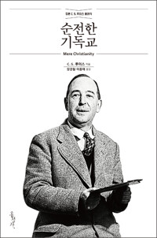

마침 진행자의 생일이었던 이날 금요북클럽은 참석자들이 준비한 케이크에 초를 꽂고, 태어남의 의미와 아이들 키우는 이야기로 한참을 웃으며 시작했다. '육아 얘기는 그만하고 책 얘기를 하자'는 진행자의 신호와 함께 1부 1장 「인간 본성의 법칙」으로 들어가자, 책이 배송되지 않아 모임을 빠질까 했다는 한 참석자의 고백이 뜻밖에도 그날 본문의 살아 있는 예화가 되어 문을 열었다. 살인범의 양심에서 드라마 속 정직한 부장, 종교 없는 야구 선수까지 종횡무진 이어진 대화는, 옳고 그름의 감각이 어디서 왔는가라는 루이스의 첫 질문을 각자의 삶으로 검증하는 시간이었다. 어린 시절 남몰래 품었던 '신 감각'의 기억들이 튀어나와 서로 놀라며 반가워한, 유쾌하고도 깊은 밤이었다.
빠질까 하던 마음을 붙든 법칙 — 이 책은 누구를 위한 것인가
책 나눔의 첫 주자는 배송 사고를 겪은 참석자였다. 주문한 책이 일주일 넘게 오지 않자 이번 모임은 빠질까 궁리했는데, 자꾸 마음 한쪽에서 그건 타당하지 않다는 소리가 들려 결국 서점에 가서 1부를 읽고 왔다는 것이다. 그런데 정작 펼친 책이 바로 그 마음속 소리, 인간 안에 내재한 도덕률을 이야기하고 있어 저자가 자기 얘기를 하는 것 같았다고 했다. 다만 이미 신앙이 있어서 이해가 됐지, 전혀 믿지 않는 사람이 읽으면 끝까지 가야 알 수 있지 않겠느냐는 물음을 함께 내놓았다.
곧바로 반대 의견이 나왔다. 오히려 하나님이라는 단어를 꺼내지 않고 일상의 예시만으로 밀고 가는 이 전개야말로 안 믿는 사람에게 더 설득력이 있겠다는 것이다. 반면 잠을 두 시간밖에 못 잤다는 한 참석자는 예시가 이리저리 오가는 느낌이라 깊이 빨려들지 못했다고 솔직하게 털어놓아 웃음을 샀고, 또 다른 참석자는 흥행 영화와 고전 소설이 하나같이 권선징악 구조인 이유를 들며 사람들 안에 선을 응원하고 악의 징벌에 통쾌해하는 무언가가 이미 있다고 받았다. 나눔 말미에는 책 제목을 두고 유쾌한 논쟁도 붙었다. 처음부터 '기독교'라고 제목에 박아 두면 안 믿는 독자가 경계하지 않겠느냐는 아쉬움에, 루이스도 그걸 예상했는지 본문에서 '종교 선전은 아직 시작도 안 했다'고 미리 눙쳐 두었다는 대꾸가 돌아와 모두 웃었다.
살인범의 전화 한 통 — 도덕법을 무시하는 데 드는 힘
논의가 깊어진 것은 한 참석자가 꺼낸 서늘한 예화부터였다. 연쇄살인범이 범행 중에 어린 아들의 천진한 전화를 받고 처음으로 섬뜩함을 느꼈다는 조서 이야기였다. 아무렇지 않게 악을 행하던 사람조차 어느 순간 자기가 틀렸음을 안다면, 그 양심은 어디서 왔는가. 비행 청소년들을 만나 온 경험도 보탰다. 습관처럼 잘못을 저지르는 아이들도 그것이 잘못이고 처벌받아 마땅하다는 것까지 다 알더라는 것이다.
진행자는 이를 루이스의 명제로 받았다. 밀려오는 도덕법을 무시하려면 오히려 반대 방향의 엄청난 에너지, 일종의 신앙적 도약이 필요하다는 것이다. 루이스의 시대가 신의 생사를 놓고 다투던 때라면, 지금은 온갖 말을 만들어 도덕법 자체에 물을 타는 시대라 변증이 더 어려워졌다는 진단이 이어졌다. 여기에 한 참석자가 이 책의 기획 자체를 '진짜 나폴리 피자'의 정의에 빗댔다. 갈래가 무성해진 기독교에서 정수만 말하겠다는 책이라는 것이다. 최근의 변증 토론들을 봐도 루이스가 다룬 논점과 반론이 그대로 반복되고 있으니, 시대를 관통하는 고전이 맞다는 결론에 다들 동의했다.
미련하게 정직한 사람 — 권선징악과 하나님의 통치
이기적인 처세가 이기는 듯 보이는 세상 이야기는 자연스럽게 드라마 「나의 아저씨」로 흘러갔다. 한 참석자는 주인공이 오천만 원의 유혹 앞에서도 미련할 만큼 정직한 길을 걷다가 결정적 순간에 바로 그 정직함으로 서는 이야기에서, 하나님이 세상을 운영하시는 원리를 보았다고 했다. 트릭을 쓰는 사람이 위너처럼 보여도 결국 정도를 걷는 사람을 하나님이 패배자로 내버려 두지 않으신다는 확신이었다.
진행자는 공감하면서도 한 겹을 더 얹었다. 현실의 우리는 드라마와 달리 권선징악의 마지막 장면을 못 보고 끝나는 경우가 많다. 순교자 스데반의 생애 어디에 눈에 보이는 권선징악이 있었느냐고 물으며, 그럼에도 그 길을 계속 가라고 응원하시는 것이 팔복이 말하는 복이라고 했다. 사람들이 악당을 시원하게 응징하는 영화에 열광하는 것 자체가 루이스가 말한 도덕법의 증거이며, 최후의 심판대에서는 그 정의가 완전하게 이루어진다는 것이다. 그러면서 그리스도인의 자리를 한 걸음 더 밀고 나갔다. '나는 저런 짓 안 한다'에서 멈추는 것은 소극적 종교이고, 그런 행동이 통하지 않는 문화를 회사와 교회 안에 만들어내는 것이 구속의 관점이며, 거기서부터 머리 아픈 진짜 신앙생활이 시작된다는 이야기에 다들 고개를 끄덕였다.

오타니는 뭘 믿고 저렇게 살까 — 종교 없이 바른 사람이라는 질문
하나님을 만나기 전에는 스스로 도덕적으로 꽤 높은 사람이라 여겼다는 한 참석자의 회심 고백이 이어진 뒤, 진행자가 불쑥 던진 질문이 좌중을 사로잡았다. 종교가 없다는데도 검소하고 반듯하게 살아 모두의 사랑을 받는 야구 선수 오타니는 대체 무엇을 믿고 저렇게 사는 걸까. 저 바름의 뿌리를 놓고 부모의 훈련, 야구에 대한 순정한 사랑, 일종의 도덕적 기복 신앙까지 저마다의 추측이 오갔다.
진행자는 이를 루이스의 틀로 정리했다. 그런 삶 역시 도덕법으로 설명되며, 특히 우주의 이치가 있고 거기에 삶을 맞춰야 한다는 성리학적 감각이 동양에는 유산처럼 남아 있다는 것이다. 그렇다면 기독교는 무엇이 다른가. 루이스가 도덕률의 발견에서 멈추지 않고 인격적인 신에게까지 나아갔듯이, 우리가 만난 진리는 율법 조항이나 글귀가 아니라 곁에서 함께 살아가시는 예수님이라는 점이 기독교의 독특함이라고 했다. 격렬하게 뒤집힌 첫 회심과 달리, 산책을 나설 때는 아니었는데 도착할 무렵엔 예수님이 계신 것 같더라던 루이스의 잔잔한 두 번째 회심 이야기는, 회심이 버튼처럼 단번에 눌리는 사건만은 아님을 보여주는 대목으로 남았다.
구름을 보던 아이, 말씀에 맛 들인 어른 — 안을 들여다보면 만나는 갈망
한 참석자가 가장 흥미로웠던 대목으로 건축가 비유를 꼽으며 토론의 방향을 안쪽으로 돌렸다. 인간 본성의 법칙은 자기 내면을 들여다볼 때 발견된다는 루이스의 접근이 신선했다며, 여러분은 자기 내면에서 신의 존재를 발견한 적이 있느냐고 물은 것이다.
뜻밖의 답들이 쏟아졌다. 진행자는 초등학생 시절부터 구름 흘러가는 것을 보며 누군가 이 지구를 붙들고 돌리고 있다는 생각에 마음이 편해지곤 했다고 털어놓았다. 그러자 한 참석자가 어릴 적 '내가 집에 가면 친구들은 멈춰 있을 것'이라 여겼다는 자기중심적 세계관을 고백했고, 놀랍게도 같은 생각을 품고 살았다는 사람이 그 자리에서 또 나왔다. 생각의 동지를 수십 년 만에 만난 진행자는 트루먼 쇼 같다며 아이처럼 반가워했다. 웃음 끝에 진행자는 루이스의 갈망 논증을 꺼내 물었다. 만족감보다 매혹적이라는 그 갈망을 경험해 본 적이 있는가. 한 참석자는 요즘 큐티 훈련을 하며 말씀을 향한 갈망이 처음 생겼다고 답했고, 진행자는 그것이 바로 갈망의 미각이 강화되는 것이라며 자신은 오히려 갈망도 없이 살다가 주님을 갑자기 만난 경우라고 솔직하게 웃었다. 루이스를 해설한 책을 정리해 나누겠다는 약속과 함께, 한 참석자의 기도로 생일 밤의 모임이 닫혔다.